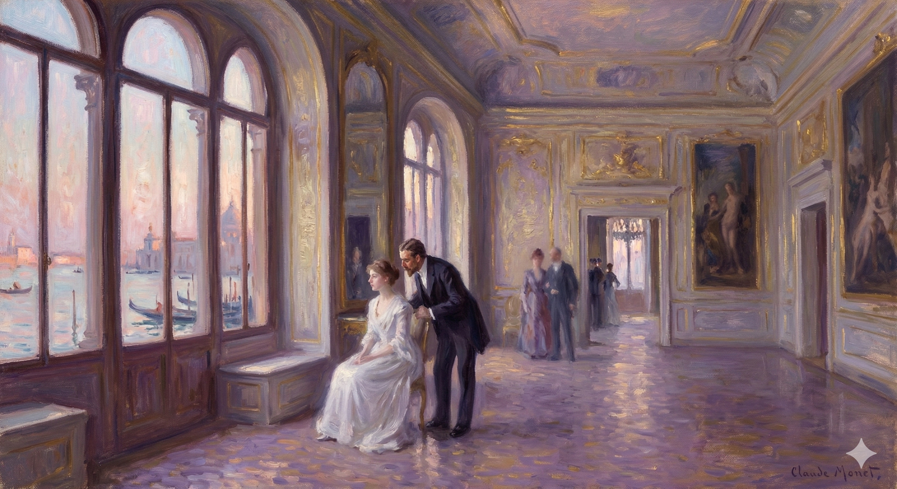

On a Thursday, Densher and Kate meet at her Aunt Maud's house. Kate explains that they cannot use the American ladies, Milly and Mrs. Stringham, to help them meet secretly, because the ladies would feel obligated to tell Aunt Maud. Densher expresses frustration, saying this proves their situation is unworkable.
Kate disagrees, telling him that Milly likes him and that he should "make something of that." They are meeting in a private room, which Kate says Aunt Maud has allowed for this one time. Feeling constrained, Densher asks Kate, "Will you take me just as I am?" She asks him to trust her and give her time. He then grabs her, asks if she loves him, and they embrace.
After the embrace, they continue to discuss their situation. Kate explains that Aunt Maud is not approving, just indifferent to details, and that they cannot meet alone in the house again. She proposes a new plan: she claims that Milly is in love with Densher. Kate says that since Milly knows about Aunt Maud's opposition to them, Milly will want to see Densher to "console" him. Densher is confused, assuming Milly knows that he and Kate are in love. Kate reveals that she has never told Milly about their relationship and that Aunt Maud’s strategy is to ignore it, so she would not have mentioned it either. According to Kate, Milly only sees that Densher likes Kate and that Kate is good to him in return.
Densher asks Kate to come to his rooms instead, but she avoids answering. He asks if her plan involves making Milly think that she (Kate) hates him, which Kate dismisses. As she sees him out, she repeats her instruction that he must go see Milly.
Based on the text, here is a concise character study:
She was good enough, as it proved, for him to put to her that evening, and with further ground for it, the next sharpest question that had been on his lips in the morning—which his other preoccupation had then, to his consciousness, crowded out. His opportunity was again made, as befell, by his learning from Mrs. Stringham, on arriving, as usual, with the close of day, at the palace, that Milly must fail them again at dinner, but would to all appearance be able to come down later. He had found Susan Shepherd alone in the great saloon, where even more candles than their friend's large common allowance—she grew daily more splendid; they were all struck with it and chaffed her about it—lighted up the pervasive mystery of Style. He had thus five minutes with the good lady before Mrs. Lowder and Kate appeared—minutes illumined indeed to a longer reach than by the number of Milly's candles.
As it turned out, she was attractive enough for him to ask her that evening. And since he had a good reason to, he followed up with the most important question he'd had on his mind that morning, which his other concerns had pushed aside. His chance came about when he arrived at the palace at the end of the day, as he usually did, and learned from Mrs. Stringham that Milly couldn't make it to dinner again, but would likely come down later. He found Susan Shepherd alone in the large living room, where even more candles than usual—she was getting more radiant every day, they all noticed and teased her about it—lit up the mysterious aura of Style. He had five minutes with Susan before Mrs. Lowder and Kate arrived, minutes that felt longer than they should have, illuminated by more than just Milly's candles.
"May she come down—ought she if she isn't really up to it?"
Should she even bother if she's not feeling up to it?
He had asked that in the wonderment always stirred in him by glimpses—rare as were these—of the inner truth about the girl. There was of course a question of health—it was in the air, it was in the ground he trod, in the food he tasted, in the sounds he heard, it was everywhere. But it was everywhere with the effect of a request to him—to his very delicacy, to the common discretion of others as well as his own—that no allusion to it should be made. There had practically been none, that morning, on her explained non-appearance—the absence of it, as we know, quite monstrous and awkward; and this passage with Mrs. Stringham offered him his first licence to open his eyes. He had gladly enough held them closed; all the more that his doing so performed for his own spirit a useful function. If he positively wanted not to be brought up with his nose against Milly's facts, what better proof could he have that his conduct was marked by straightness? It was perhaps pathetic for her, and for himself was perhaps even ridiculous; but he hadn't even the amount of curiosity that he would have had about an ordinary friend. He might have shaken himself at moments to try, for a sort of dry decency, to have it; but that too, it appeared, wouldn't come. In what therefore was the duplicity? He was at least sure about his feelings—it being so established that he had none at all. They were all for Kate, without a feather's weight to spare. He was acting for Kate—not, by the deviation of an inch, for her friend. He was accordingly not interested, for had he been interested he would have cared, and had he cared he would have wanted to know. Had he wanted to know he wouldn't have been purely passive, and it was his pure passivity that had to represent his dignity and his honour. His dignity and his honour, at the same time, let us add, fortunately fell short to-night of spoiling his little talk with Susan Shepherd. One glimpse—it was as if she had wished to give him that; and it was as if, for himself, on current terms, he could oblige her by accepting it. She not only permitted, she fairly invited him to open his eyes. "I'm so glad you're here." It was no answer to his question, but it had for the moment to serve. And the rest was fully to come.
He’d asked that question because of the constant wonder he felt whenever he got even a rare glimpse of the truth about the girl. Of course, there was the issue of her health – it was everywhere: in the air, in the ground, in the food, in the sounds around him. But this pervasive issue felt like a request, addressed to his own sensitivity and to the discretion of everyone, including himself, that it not be mentioned.
That morning, there had been hardly any mention of her absence, which, as we all knew, was quite unsettling. This conversation with Mrs. Stringham was the first time he felt free to open his eyes to the truth. He'd been happy to keep them closed, partly because doing so served a purpose for his own peace of mind. If he really didn't want to confront Milly’s reality, what better proof could he have that he was being straightforward?
It was possibly sad for her, and perhaps even ridiculous for him, but he didn't even have the curiosity he’d have for a normal friend. He might have tried to force himself to be curious at times, just for the sake of appearances, but it didn’t work. So where was the dishonesty? At least he was sure about his feelings: he felt absolutely nothing for her. All his affection was for Kate, and he wasn't willing to give up even the smallest amount. He was acting for Kate, not at all for her friend.
Consequently, he wasn't interested, because if he were interested, he’d care, and if he cared, he would want to know. If he wanted to know, he wouldn't be purely passive, and his pure passivity was essential to his sense of dignity and honor. Fortunately, his dignity and honor didn’t prevent him from enjoying his little chat with Susan Shepherd that night. It was as if she wanted to give him a glimpse, and it was as if he could, under the current circumstances, accommodate her by accepting it. She not only permitted him to open his eyes but actually encouraged it. "I'm so glad you're here." It wasn't an answer to his question, but for the moment, it would have to do. The rest would eventually come.
He smiled at her and presently found himself, as a kind of consequence of communion with her, talking her own language. "It's a very wonderful experience."
He smiled at her, and soon, almost as a result of being around her, he was speaking the same way she did. "It's an amazing experience," he said.
"Well"—and her raised face shone up at him—"that's all I want you to feel about it. If I weren't afraid," she added, "there are things I should like to say to you."
"Well," she said, looking up at him with a glowing face, "that's all I want you to understand. If I wasn't scared," she added, "there are things I'd tell you."
"And what are you afraid of, please?" he encouragingly asked.
"So, what are you worried about?" he asked, trying to be helpful.
"Of other things that I may possibly spoil. Besides, I don't, you know, seem to have the chance. You're always, you know, with her."
I might mess things up otherwise. Anyway, I don't really get the opportunity. You're always with her.
He was strangely supported, it struck him, in his fixed smile; which was the more fixed as he felt in these last words an exact description of his course. It was an odd thing to have come to, but he was always with her. "Ah," he none the less smiled, "I'm not with her now."
He felt oddly sustained, he realized, by his unchanging smile. It became even more fixed because he recognized that those last words perfectly described his situation. It was strange how things had ended up, but he was always with her. "Ah," he smiled anyway, "I'm not with her now."
"No—and I'm so glad, since I get this from it. She's ever so much better."
No, and I'm really happy about that because of this. She's doing much better.
"Better? Then she has been worse?"
Is she feeling better now? Was she feeling worse before?
Mrs. Stringham waited. "She has been marvellous—that's what she has been. She is marvellous. But she's really better."
Mrs. Stringham waited. "She's been wonderful—that's what she's been. She is wonderful. But she's actually getting better."
"Oh then if she's really better—!" But he checked himself, wanting only to be easy about it and above all not to appear engaged to the point of mystification. "We shall miss her the more at dinner."
"Oh, well, if she's actually feeling better—!" But he stopped himself, just wanting to be casual about it and, above all, not seem overly concerned or puzzled. "We'll miss her even more at dinner."
Susan Shepherd, however, was all there for him. "She's keeping herself. You'll see. You'll not really need to miss anything. There's to be a little party."
Susan Shepherd, though, was completely devoted to him.
"She's taking care of herself. You'll see. You won't
actually have to miss anything. There's going to be a small
party."
"Ah I do see—by this aggravated grandeur."
Yes, I understand now – because of this extreme display.
"Well, it is lovely, isn't it? I want the whole thing. She's lodged for the first time as she ought, from her type, to be; and doing it—I mean bringing out all the glory of the place—makes her really happy. It's a Veronese picture, as near as can be—with me as the inevitable dwarf, the small blackamoor, put into a corner of the foreground for effect. If I only had a hawk or a hound or something of that sort I should do the scene more honour. The old housekeeper, the woman in charge here, has a big red cockatoo that I might borrow and perch on my thumb for the evening." These explanations and sundry others Mrs. Stringham gave, though not all with the result of making him feel that the picture closed him in. What part was there for him, with his attitude that lacked the highest style, in a composition in which everything else would have it? "They won't, however, be at dinner, the few people she expects—they come round afterwards from their respective hotels; and Sir Luke Strett and his niece, the principal ones, will have arrived from London but an hour or two ago. It's for him she has wanted to do something—to let it begin at once. We shall see more of him, because she likes him; and I'm so glad—she'll be glad too—that you're to see him." The good lady, in connexion with it, was urgent, was almost unnaturally bright. "So I greatly hope—!" But her hope fairly lost itself in the wide light of her cheer.
"Oh, it's wonderful, isn't it? I want it all for myself. She's finally decorating the place the way she should, given who she is. And doing it—bringing out all the beauty of the house—makes her so happy. It's like a Veronese painting, almost exactly—with me as the obligatory sidekick, the insignificant little figure in the corner for flair. If I just had a hawk or a hunting dog or something like that, I could really enhance the scene. The housekeeper, the woman who runs the place, has a big red cockatoo I could borrow and have it sit on my thumb for the evening." Mrs. Stringham offered these explanations and others, but they didn't really make him feel like he was part of the picture. What role could he possibly play, with his personality that wasn't particularly stylish, in a setting where everything else was? "They won't be having dinner, the few guests she's expecting—they'll come after from their hotels; and Sir Luke Strett and his niece, the most important ones, will have just arrived from London. It's for him she wanted to do this—to get things started right away. We'll see more of him because she likes him, and I'm so pleased—and she will be too—that you're going to meet him." The dear woman was enthusiastic, almost unusually cheerful, about it all. "So I really hope—!" But her hope was completely consumed by her radiant smile.
He considered a little this appearance, while she let him, he thought, into still more knowledge than she uttered. "What is it you hope?"
He looked at her for a moment, and she let him. He thought she was giving him more information than she was actually saying. "What do you want?"
"Well, that you'll stay on."
Okay, you'll stay.
"Do you mean after dinner?" She meant, he seemed to feel, so much that he could scarce tell where it ended or began.
"Do you mean after dinner?" She seemed to be hinting at so much, he felt, that he could hardly figure out where it started or stopped.
"Oh that, of course. Why we're to have music—beautiful instruments and songs; and not Tasso declaimed as in the guide-books either. She has arranged it—or at least I have. That is Eugenio has. Besides, you're in the picture."
Oh, right, that. We're definitely having music—beautiful instruments and songs. And not just someone reciting Tasso like it's a textbook, either. She organized it—or at least, I did. Actually, Eugenio did. Besides, you're involved.
"Oh—I!" said Densher almost with the gravity of a real protest.
"Oh—me!" Densher said, sounding almost like he was seriously objecting.
"You'll be the grand young man who surpasses the others and holds up his head and the wine-cup. What we hope," Mrs. Stringham pursued, "is that you'll be faithful to us—that you've not come for a mere foolish few days."
You'll be amazing, better than everyone else, and proud. What we're hoping," Mrs. Stringham continued, "is that you'll stick around – that you haven't just come for a short visit."
Densher's more private and particular shabby realities turned, without comfort, he was conscious, at this touch, in the artificial repose he had in his anxiety about them but half-managed to induce. The way smooth ladies, travelling for their pleasure and housed in Veronese pictures, talked to plain embarrassed working-men, engaged in an unprecedented sacrifice of time and of the opportunity for modest acquisition! The things they took for granted and the general misery of explaining! He couldn't tell them how he had tried to work, how it was partly what he had moved into rooms for, only to find himself, almost for the first time in his life, stricken and sterile; because that would give them a false view of the source of his restlessness, if not of the degree of it. It would operate, indirectly perhaps, but infallibly, to add to that weight as of expected performance which these very moments with Mrs. Stringham caused more and more to settle on his heart. He had incurred it, the expectation of performance; the thing was done, and there was no use talking; again, again the cold breath of it was in the air. So there he was. And at best he floundered. "I'm afraid you won't understand when I say I've very tiresome things to consider. Botherations, necessities at home. The pinch, the pressure in London."
Densher's more personal, less glamorous problems changed. He realized, without finding any solace, that the artificial calm he'd barely managed to create to deal with his worries was dissolving. He thought of how these elegant women, traveling for fun and living in luxurious settings, spoke to ordinary, uncomfortable working-class men who were making an unprecedented sacrifice of their time and financial opportunities. The things the women assumed and the general awkwardness of having to explain things! He couldn't tell them how he'd tried to work, how he'd moved into rooms partly for that reason, only to discover, almost for the first time, that he was blocked and unproductive. Sharing that would give them a wrong idea about the cause of his restlessness, or at least how intense it was. It would also, indirectly but surely, add to the pressure of expectation that these conversations with Mrs. Stringham created, weighing more and more on his mind. He'd brought this on himself, this expectation; it was a done deal, and there was no point dwelling on it. The cold reality of it was in the air once again. So, there he was. At his best, he was struggling. "I don't think you'll understand when I say I have some very annoying things to think about. Troubles, responsibilities back home. The financial strain, the pressure in London."
But she understood in perfection; she rose to the pinch and the pressure and showed how they had been her own very element. "Oh the daily task and the daily wage, the golden guerdon or reward? No one knows better than I how they haunt one in the flight of the precious deceiving days. Aren't they just what I myself have given up? I've given up all to follow her. I wish you could feel as I do. And can't you," she asked, "write about Venice?"
But she completely understood; she rose to the challenge and showed how those difficulties had actually been her strength. "Oh, the everyday work and the money you earn, the big rewards? Nobody knows better than me how they stay with you, even when you're caught up in those fleeting, precious days that trick you. Aren't those things exactly what I gave up? I gave up everything to follow her. I wish you could feel the way I do. And," she asked, "can't you write about Venice?"
He very nearly wished, for the minute, that he could feel as she did; and he smiled for her kindly. "Do you write about Venice?"
He almost wished, for a moment, that he could feel the same way she did. He smiled at her warmly. "Do you write about Venice?"
"No; but I would—oh wouldn't I?—if I hadn't so completely given up. She's, you know, my princess, and to one's princess—"
No, but I would—I really would—if I hadn't totally given up. She's, you know, my dream girl, and to your dream girl—
"One makes the whole sacrifice?"
Is anyone making the whole offering?
"Precisely. There you are!"
Exactly! Here it is!
It pressed on him with this that never had a man been in so many places at once. "I quite understand that she's yours. Only you see she's not mine." He felt he could somehow, for honesty, risk that, as he had the moral certainty she wouldn't repeat it and least of all to Mrs. Lowder, who would find in it a disturbing implication. This was part of what he liked in the good lady, that she didn't repeat, and also that she gave him a delicate sense of her shyly wishing him to know it. That was in itself a hint of possibilities between them, of a relation, beneficent and elastic for him, which wouldn't engage him further than he could see. Yet even as he afresh made this out he felt how strange it all was. She wanted, Susan Shepherd then, as appeared, the same thing Kate wanted, only wanted it, as still further appeared, in so different a way and from a motive so different, even though scarce less deep. Then Mrs. Lowder wanted, by so odd an evolution of her exuberance, exactly what each of the others did; and he was between them all, he was in the midst. Such perceptions made occasions—well, occasions for fairly wondering if it mightn't be best just to consent, luxuriously, to be the ass the whole thing involved. Trying not to be and yet keeping in it was of the two things the more asinine. He was glad there was no male witness; it was a circle of petticoats; he shouldn't have liked a man to see him. He only had for a moment a sharp thought of Sir Luke Strett, the great master of the knife whom Kate in London had spoken of Milly as in commerce with, and whose renewed intervention at such a distance, just announced to him, required some accounting for. He had a vision of great London surgeons—if this one was a surgeon—as incisive all round; so that he should perhaps after all not wholly escape the ironic attention of his own sex. The most he might be able to do was not to care; while he was trying not to he could take that in. It was a train, however, that brought up the vision of Lord Mark as well. Lord Mark had caught him twice in the fact—the fact of his absurd posture; and that made a second male. But it was comparatively easy not to mind Lord Mark.
He was struck by the fact that he was in so many different situations at the same time, something no one else had ever experienced. "I understand she's yours. But you see, she isn't mine." He felt he could risk admitting this, for the sake of honesty, because he was certain she wouldn't repeat it, especially not to Mrs. Lowder, who would find it unsettling. This was one of the things he liked about Mrs. Lowder: she didn't gossip, and she subtly let him know that she wanted him to be aware of this. That hinted at a potential relationship between them, one that would be beneficial and flexible for him, and wouldn't obligate him beyond what he was comfortable with. But even as he considered this again, he realized how odd everything was. Susan Shepherd, it seemed, wanted the same thing Kate wanted, but wanted it in a completely different way and for a very different reason, even if the desire was just as strong. Then Mrs. Lowder, through her own strange behavior, wanted exactly what the other two wanted; and he was caught in the middle, right in the thick of it. These realizations made him wonder if it might be best to simply give in, and accept being the fool in this whole mess. Trying not to be the fool while still being involved was the more ridiculous option.
He was glad there were no men around; it was just a group of women. He wouldn't have wanted a man to see him like this. For a moment, he thought sharply of Sir Luke Strett, the famous surgeon whom Kate had mentioned in London, and who was supposedly involved with Milly. This renewed involvement, just announced to him, needed some explanation. He imagined London surgeons – if this one was a surgeon – being critical of everything; so he might not escape the ironic judgment of his own gender. The best he could probably do was not to care; he could focus on that while he was trying not to. However, that line of thought also brought up the image of Lord Mark. Lord Mark had caught him twice in compromising positions, which meant there was a second man involved. But it was relatively easy not to worry about Lord Mark.
His companion had before this taken him up, and in a tone to confirm her discretion, on the matter of Milly's not being his princess. "Of course she's not. You must do something first."
His friend had already discussed this with him, and, in a way that supported her good judgment, had brought up the subject of Milly not being his "girlfriend." "Obviously she's not. You have to *do* something first."
Densher gave it his thought. "Wouldn't it be rather she who must?"
Densher considered. "Wouldn't she be the one who has to?"
It had more than he intended the effect of bringing her to a stand. "I see. No doubt, if one takes it so." Her cheer was for the time in eclipse, and she looked over the place, avoiding his eyes, as in the wonder of what Milly could do. "And yet she has wanted to be kind."
That had the unintended effect of stopping her in her tracks. "I understand. No doubt, if you look at it that way." Her good spirits vanished for a moment, and she looked around, avoiding his gaze, as if wondering what Milly would do. "And yet, she's wanted to be nice."
It made him on the spot feel a brute. "Of course she has. No one could be more charming. She has treated me as if I were somebody. Call her my hostess as I've never had nor imagined a hostess, and I'm with you altogether. Of course," he added in the right spirit for her, "I do see that it's quite court life."
He immediately felt like a jerk. "Of course she has. Nobody could be more charming. She's treated me like I actually matter. I'd call her the perfect hostess, better than any I've ever had or even imagined, and I completely agree with you. Of course," he added, trying to match her tone, "I understand now that this is basically high society."
She promptly showed how this was almost all she wanted of him. "That's all I mean, if you understand it of such a court as never was: one of the courts of heaven, the court of a reigning seraph, a sort of a vice-queen of an angel. That will do perfectly."
She immediately demonstrated that this was practically everything she desired from him. "That's it, exactly what I mean, if you picture it like this: a court that's unlike any other, one of the heavenly courts, the court of a ruling angel, a kind of deputy angel, a right-hand angel. That will be perfect."
"Oh well then I grant it. Only court life as a general thing, you know," he observed, "isn't supposed to pay."
Okay, I agree. But you know, being in the court usually doesn't pay well.
"Yes, one has read; but this is beyond any book. That's just the beauty here; it's why she's the great and only princess. With her, at her court," said Mrs. Stringham, "it does pay." Then as if she had quite settled it for him: "You'll see for yourself."
Yes, I've read about it, but this is unlike anything you'll find in a book. That's the amazing thing about her; it's why she's such a remarkable and unique person. With her, at her gatherings," Mrs. Stringham said, "it's definitely worth it." Then, as if she'd completely convinced him, "You'll understand once you experience it."
He waited a moment, but said nothing to discourage her. "I think you were right just now. One must do something first."
He waited a beat, but didn't say anything to talk her out of it. "I think you were right. You have to take action."
"Well, you've done something."
Okay, you've really done it now.
"No—I don't see that. I can do more."
No, I disagree. I can do better.
Oh well, she seemed to say, if he would have it so! "You can do everything, you know."
"Fine," she seemed to be saying, "if that's what he wants!"
"You can handle anything, you know."
"Everything" was rather too much for him to take up gravely, and he modestly let it alone, speaking the next moment, to avert fatuity, of a different but a related matter. "Why has she sent for Sir Luke Strett if, as you tell me, she's so much better?"
He found "everything" too overwhelming to consider seriously, so he politely avoided the topic and quickly changed the subject to avoid sounding foolish. He said, "Why did she call for Sir Luke Strett if, like you said, she's doing much better?"
"She hasn't sent. He has come of himself," Mrs. Stringham explained. "He has wanted to come."
"She hasn't sent him. He came on his own," Mrs. Stringham explained. "He wanted to come."
"Isn't that rather worse then—if it means he mayn't be easy?"
Isn't that even worse, then, if it means he might not be comfortable?
"He was coming, from the first, for his holiday. She has known that these several weeks." After which Mrs. Stringham added: "You can make him easy."
He was planning to come for his vacation, from the very beginning. She's known that for weeks now." Then Mrs. Stringham added, "You can put his mind at ease."
"I can?" he candidly wondered. It was truly the circle of petticoats. "What have I to do with it for a man like that?"
"Can I?" he honestly wondered. It was all about women. "What business do I have with that kind of guy?"
"How do you know," said his friend, "what he's like? He's not like any one you've ever seen. He's a great beneficent being."
"How do you know what he's like?" said his friend. "He's not like anyone you've ever met. He's a great, kind person."
"Ah then he can do without me. I've no call, as an outsider, to meddle."
Okay, then he doesn't need me. It's none of my business to interfere.
"Tell him, all the same," Mrs. Stringham urged, "what you think."
"Tell him anyway," Mrs. Stringham urged, "what you think."
"What I think of Miss Theale?" Densher stared. It was, as they said, a large order. But he found the right note. "It's none of his business."
"What do I think of Miss Theale?" Densher was surprised.
It was, as they said, a difficult question. But he found
the right answer. "It's none of his concern."
It did seem a moment for Mrs. Stringham too the right note. She fixed him at least with an expression still bright, but searching, that showed almost to excess what she saw in it; though what this might be he was not to make out till afterwards. "Say that to him then. Anything will do for him as a means of getting at you."
Mrs. Stringham also seemed to think this was the appropriate thing to say. She gave him a bright but questioning look, revealing nearly too much of what she thought about it, though he wouldn't understand what that was until later. "Just tell him that, then. Anything will work on him to try and get to you."
"And why should he get at me?"
And why would he bother me?
"Give him a chance to. Let him talk to you. Then you'll see."
Let him explain. Listen to him. Then you'll understand.
All of which, on Mrs. Stringham's part, sharpened his sense of immersion in an element rather more strangely than agreeably warm—a sense that was moreover, during the next two or three hours, to be fed to satiety by several other impressions. Milly came down after dinner, half a dozen friends—objects of interest mainly, it appeared, to the ladies of Lancaster Gate—having by that time arrived; and with this call on her attention, the further call of her musicians ushered by Eugenio, but personally and separately welcomed, and the supreme opportunity offered in the arrival of the great doctor, who came last of all, he felt her diffuse in wide warm waves the spell of a general, a beatific mildness. There was a deeper depth of it, doubtless, for some than for others; what he in particular knew of it was that he seemed to stand in it up to his neck. He moved about in it and it made no plash; he floated, he noiselessly swam in it, and they were all together, for that matter, like fishes in a crystal pool. The effect of the place, the beauty of the scene, had probably much to do with it; the golden grace of the high rooms, chambers of art in themselves, took care, as an influence, of the general manner, and made people bland without making them solemn. They were only people, as Mrs. Stringham had said, staying for the week or two at the inns, people who during the day had fingered their Baedekers, gaped at their frescoes and differed, over fractions of francs, with their gondoliers. But Milly, let loose among them in a wonderful white dress, brought them somehow into relation with something that made them more finely genial; so that if the Veronese picture of which he had talked with Mrs. Stringham was not quite constituted, the comparative prose of the previous hours, the traces of insensibility qualified by "beating down," were at last almost nobly disowned. There was perhaps something for him in the accident of his seeing her for the first time in white, but she hadn't yet had occasion—circulating with a clearness intensified—to strike him as so happily pervasive. She was different, younger, fairer, with the colour of her braided hair more than ever a not altogether lucky challenge to attention; yet he was loth wholly to explain it by her having quitted this once, for some obscure yet doubtless charming reason, her almost monastic, her hitherto inveterate black. Much as the change did for the value of her presence, she had never yet, when all was said, made it for him; and he was not to fail of the further amusement of judging her determined in the matter by Sir Luke Strett's visit. If he could in this connexion have felt jealous of Sir Luke Strett, whose strong face and type, less assimilated by the scene perhaps than any others, he was anon to study from the other side of the saloon, that would doubtless have been most amusing of all. But he couldn't be invidious, even to profit by so high a tide; he felt himself too much "in" it, as he might have said: a moment's reflexion put him more in than any one. The way Milly neglected him for other cares while Kate and Mrs. Lowder, without so much as the attenuation of a joke, introduced him to English ladies—that was itself a proof; for nothing really of so close a communion had up to this time passed between them as the single bright look and the three gay words (all ostensibly of the last lightness) with which her confessed consciousness brushed by him.
All of this, because of Mrs. Stringham, intensified his feeling of being submerged in a rather strange, and not particularly pleasant, warmth. This feeling was further strengthened over the next few hours by several other experiences. Milly came downstairs after dinner, by which time about half a dozen guests – mostly of interest, it seemed, to the women of Lancaster Gate – had arrived. Between this need to entertain her guests, the further interruption of her musicians, announced by Eugenio but welcomed personally and separately, and the ultimate arrival of the famous doctor, who came last, he felt her radiate a spell of general, pleasant warmth. This effect was likely deeper for some than for others; what he personally experienced was that he felt immersed, up to his neck. He moved around in it without a ripple; he floated, he swam silently in it, and they were all together, like fish in a clear pool. The effect of the setting, the beauty of the scene, probably contributed; the golden elegance of the grand rooms, works of art in themselves, naturally influenced everyone’s demeanor, making them pleasant without making them solemn. They were just ordinary people, as Mrs. Stringham had said, staying a week or two at hotels, people who spent their days consulting their guidebooks, gazing at frescoes, and haggling with gondoliers over a few francs. But Milly, appearing among them in a wonderful white dress, somehow connected them to something that made them more genuinely friendly, so that even if the Veronese painting he’d discussed with Mrs. Stringham wasn’t quite realized, the relatively mundane events of the previous hours, the traces of indifference softened by persuasion, were finally almost nobly forgotten. Perhaps seeing her in white for the first time was significant for him, but she hadn’t yet had a chance – moving with heightened clarity – to strike him as so beautifully pervasive. She was different, younger, fairer, with the color of her braided hair more than ever a bold attraction; yet he hesitated to explain it entirely by her having abandoned, for some unclear yet presumably charming reason, her almost nun-like, hitherto constant black clothing. As much as the change enhanced her presence, she hadn’t, when all was said and done, ever really done this for him; and he was eager to enjoy the further amusement of judging her determination in the matter by Sir Luke Strett's visit. If he could have felt jealous of Sir Luke Strett, whose strong face and general appearance, perhaps less suited to the scene than the others, he was soon to observe from across the room, that would undoubtedly have been most amusing of all. But he couldn't be envious, even to benefit from such a wonderful situation; he felt too immersed, as he might have put it: a moment's thought put him more "in" than anyone else. The way Milly ignored him for other obligations while Kate and Mrs. Lowder, without even the subtlety of a joke, introduced him to English ladies – that itself was proof; because nothing truly intimate had ever passed between them before, not even the single bright look and the three cheerful words (all seemingly very casual) with which her acknowledged awareness brushed past him.
She was acquitting herself to-night as hostess, he could see, under some supreme idea, an inspiration which was half her nerves and half an inevitable harmony; but what he especially recognised was the character that had already several times broken out in her and that she so oddly appeared able, by choice or by instinctive affinity, to keep down or to display. She was the American girl as he had originally found her—found her at certain moments, it was true, in New York, more than at certain others; she was the American girl as, still more than then, he had seen her on the day of her meeting him in London and in Kate's company. It affected him as a large though queer social resource in her—such as a man, for instance, to his diminution, would never in the world be able to command; and he wouldn't have known whether to see it in an extension or a contraction of "personality," taking it as he did most directly for a confounding extension of surface. Clearly too it was the right thing this evening all round: that came out for him in a word from Kate as she approached him to wreak on him a second introduction. He had under cover of the music melted away from the lady toward whom she had first pushed him; and there was something in her to affect him as telling evasively a tale of their talk in the Piazza. To what did she want to coerce him as a form of penalty for what he had done to her there? It was thus in contact uppermost for him that he had done something; not only caused her perfect intelligence to act in his interest, but left her unable to get away, by any mere private effort, from his inattackable logic. With him thus in presence, and near him—and it had been as unmistakeable through dinner—there was no getting away for her at all, there was less of it than ever: so she could only either deal with the question straight, either frankly yield or ineffectually struggle or insincerely argue, or else merely express herself by following up the advantage she did possess. It was part of that advantage for the hour—a brief fallacious makeweight to his pressure—that there were plenty of things left in which he must feel her will. They only told him, these indications, how much she was, in such close quarters, feeling his; and it was enough for him again that her very aspect, as great a variation in its way as Milly's own, gave him back the sense of his action. It had never yet in life been granted him to know, almost materially to taste, as he could do in these minutes, the state of what was vulgarly called conquest. He had lived long enough to have been on occasion "liked," but it had never begun to be allowed him to be liked to any such tune in any such quarter. It was a liking greater than Milly's—or it would be: he felt it in him to answer for that. So at all events he read the case while he noted that Kate was somehow—for Kate—wanting in lustre. As a striking young presence she was practically superseded; of the mildness that Milly diffused she had assimilated all her share; she might fairly have been dressed to-night in the little black frock, superficially indistinguishable, that Milly had laid aside. This represented, he perceived, the opposite pole from such an effect as that of her wonderful entrance, under her aunt's eyes—he had never forgotten it—the day of their younger friend's failure at Lancaster Gate. She was, in her accepted effacement—it was actually her acceptance that made the beauty and repaired the damage—under her aunt's eyes now; but whose eyes were not effectually preoccupied? It struck him none the less certainly that almost the first thing she said to him showed an exquisite attempt to appear if not unconvinced at least self-possessed.
He could see that she was doing a good job as hostess tonight, driven by some grand vision, a combination of her nervous energy and an innate sense of harmony. But what he really recognized was the personality trait that had surfaced in her several times before, a characteristic she seemed able to control or unleash at will, whether by choice or instinct. She was the American girl he had first known—the one he had glimpsed at certain moments in New York, and even more so on the day they met in London, in Kate's company. It struck him as a significant, though strange, social skill, one that a man, for example, would never possess. He wasn't sure if it was an expansion or a contraction of her "personality," considering it a confusing expansion of her outward self.
It was clearly the right thing for her to do this evening; he understood this when Kate approached him to introduce him to another person. He had slipped away from the woman Kate had first pushed him toward, under the cover of the music; and there was something in Kate’s expression that seemed to hint at their conversation in the Piazza. What was she trying to make him do, as some sort of punishment for what he had done to her there? He was most aware that he had caused her perfect intelligence to work in his favor, and that he had also made it impossible for her to escape his undeniable logic by any private effort. With him present and close to her—as it had been throughout dinner—she had no escape at all, not even the smallest chance. So, she could only address the issue directly, either by giving in frankly, struggling ineffectively, arguing insincerely, or simply expressing herself by exploiting any advantage she had.
Part of that advantage for the moment—a brief, misleading counterbalance to his pressure—was that there were still many things where he had to acknowledge her will. These indications only showed him how much she was, in such close proximity, feeling his influence. And it was enough for him that her very appearance, as different in its own way as Milly's, confirmed his actions. He had never before experienced in life, almost materially tasted, the feeling of what was commonly called conquest as he could in these moments. He had lived long enough to have been "liked" on occasion, but he had never been liked to this extent or in this situation. It was a liking greater than Milly's—or it would be: he felt certain of that. So, he interpreted the situation as he observed that Kate was somehow—for Kate—lacking her usual vibrancy. As a striking young presence, she was practically overshadowed; she had absorbed all of Milly’s gentle nature. She could have easily been wearing the same little black dress Milly had set aside, and no one would have known the difference. He realized this represented the opposite of the effect she had created with her amazing entrance, under her aunt's watchful eyes—he had never forgotten it—the day of their younger friend's failure at Lancaster Gate. In her accepted self-effacement—it was actually her acceptance that created the beauty and repaired the damage—she was now under her aunt's scrutiny; but whose eyes were truly focused? He was certain that almost the first thing she said to him showed a delicate effort to appear, if not unconvinced, then at least in control of herself.
"Don't you think her good enough now?" Almost heedless of the danger of overt freedoms, she eyed Milly from where they stood, noted her in renewed talk, over her further wishes, with the members of her little orchestra, who had approached her with demonstrations of deference enlivened by native humours—things quite in the line of old Venetian comedy. The girl's idea of music had been happy—a real solvent of shyness, yet not drastic; thanks to the intermissions, discretions, a general habit of mercy to gathered barbarians, that reflected the good manners of its interpreters, representatives though these might be but of the order in which taste was natural and melody rank. It was easy at all events to answer Kate. "Ah my dear, you know how good I think her!"
"Don't you think she's good enough now?"
Almost ignoring the risk of being too open, she looked at Milly, watching her in the middle of their conversation, asking her further requests to the members of her small band. They had come over to her showing respect, mixed with their own playful humor – it was like something out of an old Venetian comedy. The girl's idea of music had been enjoyable – a way to overcome shyness without being overwhelming. This was thanks to the breaks, the discretion, and a general kindness to the audience, which reflected the good manners of the musicians. They might just be representatives of a group where good taste was natural and melody was commonplace. It was easy to respond to Kate. "Oh, honey, you know how highly I think of her!"
"But she's too nice," Kate returned with appreciation. "Everything suits her so—especially her pearls. They go so with her old lace. I'll trouble you really to look at them." Densher, though aware he had seen them before, had perhaps not "really" looked at them, and had thus not done justice to the embodied poetry—his mind, for Milly's aspects, kept coming back to that—which owed them part of its style. Kate's face, as she considered them, struck him: the long, priceless chain, wound twice round the neck, hung, heavy and pure, down the front of the wearer's breast—so far down that Milly's trick, evidently unconscious, of holding and vaguely fingering and entwining a part of it, conduced presumably to convenience. "She's a dove," Kate went on, "and one somehow doesn't think of doves as bejewelled. Yet they suit her down to the ground."
"But she's too kind," Kate said, admiringly.
"Everything looks so good on her—especially her
pearls. They go perfectly with her old lace. I'd like
you to really look at them." Densher, although he knew
he'd seen them before, probably hadn't "really"
looked at them, and therefore hadn't appreciated
the poetic quality—his mind, when he thought about Milly,
always came back to that—that the pearls contributed to.
Kate's face, as she considered the pearls, caught his eye: the long, valuable chain, wrapped twice
around her neck, hung, heavy and pure, down the front
of her chest—so low that Milly's habit, clearly
unconscious, of holding and gently playing with a part
of it, was probably for convenience. "She's so gentle," Kate
continued, "and somehow you don't think of gentle people
wearing jewels. But they look wonderful on her."
"Yes—down to the ground is the word." Densher saw now how they suited her, but was perhaps still more aware of something intense in his companion's feeling about them. Milly was indeed a dove; this was the figure, though it most applied to her spirit. Yet he knew in a moment that Kate was just now, for reasons hidden from him, exceptionally under the impression of that element of wealth in her which was a power, which was a great power, and which was dove-like only so far as one remembered that doves have wings and wondrous flights, have them as well as tender tints and soft sounds. It even came to him dimly that such wings could in a given case—had, truly, in the case with which he was concerned—spread themselves for protection. Hadn't they, for that matter, lately taken an inordinate reach, and weren't Kate and Mrs. Lowder, weren't Susan Shepherd and he, wasn't he in particular, nestling under them to a great increase of immediate ease? All this was a brighter blur in the general light, out of which he heard Kate presently going on.
"Yes, absolutely," Densher said. He realized how well the clothes looked on her, but he was probably more struck by how strongly his friend felt about them. Milly was definitely a gentle soul, a "dove," and that was especially true of her personality. However, he instantly understood that Kate was currently, for reasons he didn't know, very aware of the wealth she possessed—a power, a significant power. This "dove-like" aspect of her only mattered if you remembered that doves can fly, they have amazing flights, just as they have lovely colors and gentle sounds. He even vaguely understood that those "wings" could, in a specific situation—and had, in the situation he was involved in—be used for protection. Hadn't they, in fact, recently reached out in an unusual way, and weren't Kate and Mrs. Lowder, weren't Susan Shepherd and he, especially *him*, benefiting from this, enjoying a significant increase in comfort? This was all a brighter, less clear aspect in the overall situation, and from within it, he heard Kate continue speaking.
"Pearls have such a magic that they suit every one."
Pearls are so magical, they look good on everyone.
"They would uncommonly suit you," he frankly returned.
They'd really look good on you, he replied honestly.
"Oh yes, I see myself!"
"Oh yeah, I get it!"
As she saw herself, suddenly, he saw her—she would have been splendid; and with it he felt more what she was thinking of. Milly's royal ornament had—under pressure now not wholly occult—taken on the character of a symbol of differences, differences of which the vision was actually in Kate's face. It might have been in her face too that, well as she certainly would look in pearls, pearls were exactly what Merton Densher would never be able to give her. Wasn't that the great difference that Milly to-night symbolised? She unconsciously represented to Kate, and Kate took it in at every pore, that there was nobody with whom she had less in common than a remarkably handsome girl married to a man unable to make her on any such lines as that the least little present. Of these absurdities, however, it was not till afterwards that Densher thought. He could think now, to any purpose, only of what Mrs. Stringham had said to him before dinner. He could but come back to his friend's question of a minute ago. "She's certainly good enough, as you call it, in the sense that I'm assured she's better. Mrs. Stringham, an hour or two since, was in great feather to me about it. She evidently believes her better."
As she looked at herself, he saw her—she looked beautiful. He felt like he understood what she was thinking. Milly’s elegant appearance had—though not entirely obvious—become a symbol of their differences, differences that were clear in Kate's expression. Kate might have been thinking that, even though she’d look great in pearls, Merton Densher could never afford to buy her any. Wasn’t that the main difference Milly represented tonight? Unknowingly, Milly showed Kate, who completely understood, that she had little in common with a very attractive woman married to a man who couldn’t afford to give her even a small gift. Densher didn’t think about these absurdities until later. Now, he could only think about what Mrs. Stringham had said to him before dinner. He kept returning to his friend's question from a few minutes ago. "She's certainly attractive enough, as you say, and I'm convinced she's even better than that. Mrs. Stringham, earlier, was very enthusiastic about her. She obviously thinks she's a wonderful person."
"Well, if they choose to call it so—!"
"Well, if that's what they want to call it—!"
"And what do you call it—as against them?"
And what do you call it, compared to them?
"I don't call it anything to any one but you. I'm not 'against' them!" Kate added as with just a fresh breath of impatience for all he had to be taught.
I'm only telling you this. And I'm not "against" them! Kate added, sounding a little impatient that she even had to explain it.
"That's what I'm talking about," he said. "What do you call it to me?"
"That's exactly what I mean," he said. "What are you calling me?"
It made her wait a little. "She isn't better. She's worse. But that has nothing to do with it."
It made her wait a moment. "She's not doing any better. She's doing worse. But that's not the point."
"Nothing to do?" He wondered.
"Nothing to do?" he thought.
But she was clear. "Nothing to do with us. Except of course that we're doing our best for her. We're making her want to live." And Kate again watched her. "To-night she does want to live." She spoke with a kindness that had the strange property of striking him as inconsequent—so much, and doubtless so unjustly, had all her clearness been an implication of the hard. "It's wonderful. It's beautiful."
But she was definite. "It's nothing to do with us, except that we're trying our hardest to help her. We're giving her a reason to want to live." And Kate looked at her again. "She wants to live tonight." She spoke with a kindness that seemed odd and out of place to him – perhaps unfairly, he thought, because her certainty had always implied a certain toughness. "It's amazing. It's beautiful."
"It's beautiful indeed."
It's really beautiful.
He hated somehow the helplessness of his own note; but she had given it no heed. "She's doing it for him"—and she nodded in the direction of Milly's medical visitor. "She wants to be for him at her best. But she can't deceive him."
He felt frustrated by his own inability to help, but she hadn't noticed. "She's doing this for him" – and she gestured towards Milly's doctor. "She wants to be at her best for him. But she can't fool him."
Densher had been looking too; which made him say in a moment: "And do you think you can? I mean, if he's to be with us here, about your sentiments. If Aunt Maud's so thick with him—!"
Densher had been looking too, which made him ask immediately: "So, do you think you can? I mean, if he's going to be around us here, about how you feel. If Aunt Maud is so close to him—!"
Aunt Maud now occupied in fact a place at his side and was visibly doing her best to entertain him, though this failed to prevent such a direction of his own eyes—determined, in the way such things happen, precisely by the attention of the others—as Densher became aware of and as Kate promptly marked. "He's looking at you. He wants to speak to you."
Aunt Maud was right there with him, clearly trying to keep him entertained. But he kept looking away – you know how it is, always drawn to what everyone else is focused on. Densher noticed this, and Kate immediately picked up on it. "He's staring at you. He wants to talk to you."
"So Mrs. Stringham," the young man laughed, "advised me he would."
"So Mrs. Stringham," the young man laughed, "told me she would."
"Then let him. Be right with him. I don't need," Kate went on in answer to the previous question, "to deceive him. Aunt Maud, if it's necessary, will do that. I mean that, knowing nothing about me, he can see me only as she sees me. She sees me now so well. He has nothing to do with me."
Let him do what he wants. I'm fine with him. I don't need to," Kate continued, answering the earlier question, "to trick him. If it's needed, Aunt Maud will handle that. What I'm saying is, since he knows nothing about me, he can only see me the way she sees me. And she sees me clearly now. He has nothing to do with me."
"Except to reprobate you," Densher suggested.
"Unless you're going to condemn me," Densher offered.
"For not caring for you? Perfectly. As a brilliant young man driven by it into your relation with Milly—as all that I leave you to him."
"Because I didn't treat you well? Fine. Because of that, he became your friend—a brilliant young man—and I'm essentially leaving you to him."
"Well," said Densher sincerely enough, "I think I can thank you for leaving me to some one easier perhaps with me than yourself."
"Well," Densher said, sounding genuine, "I think I can thank you for potentially leaving me for someone who's easier to deal with than you."
She had been looking about again meanwhile, the lady having changed her place, for the friend of Mrs. Lowder's to whom she had spoken of introducing him. "All the more reason why I should commit you then to Lady Wells."
She'd been looking around again, while the woman had moved. The woman had been the friend of Mrs. Lowder's, the one she'd mentioned introducing him to. "That's even more reason to have you meet Lady Wells then."
"Oh but wait." It was not only that he distinguished Lady Wells from afar, that she inspired him with no eagerness, and that, somewhere at the back of his head, he was fairly aware of the question, in germ, of whether this was the kind of person he should be involved with when they were married. It was furthermore that the consciousness of something he had not got from Kate in the morning, and that logically much concerned him, had been made more keen by these very moments—to say nothing of the consciousness that, with their general smallness of opportunity, he must squeeze each stray instant hard. If Aunt Maud, over there with Sir Luke, noted him as a little "attentive," that might pass for a futile demonstration on the part of a gentleman who had to confess to having, not very gracefully, changed his mind. Besides, just now, he didn't care for Aunt Maud except in so far as he was immediately to show. "How can Mrs. Lowder think me disposed of with any finality, if I'm disposed of only to a girl who's dying? If you're right about that, about the state of the case, you're wrong about Mrs. Lowder's being squared. If Milly, as you say," he lucidly pursued, "can't deceive a great surgeon, or whatever, the great surgeon won't deceive other people—not those, that is, who are closely concerned. He won't at any rate deceive Mrs. Stringham, who's Milly's greatest friend; and it will be very odd if Mrs. Stringham deceives Aunt Maud, who's her own."
Hold on a second. It wasn't just that he could see Lady Wells from a distance and she didn't exactly excite him, or that he was already considering, in the back of his mind, if she was the type of person he should marry. It was also that the feeling he'd missed with Kate that morning, and that should have been important to him, had become even stronger in these very moments. And, of course, he was aware that he had to make the most of every free moment, because there wasn’t much time to spare. If Aunt Maud saw him being “attentive” over there with Sir Luke, it would just look like he was trying to look good after changing his mind, which he hadn’t done very gracefully. Besides, he didn’t care about Aunt Maud right now, except in how he was going to appear to her. "How could Mrs. Lowder think I'm finished with my other options if I'm only committed to a girl who's dying? If you're right about that—about the situation—then you're wrong about Mrs. Lowder being satisfied. If Milly," he explained clearly, "can't fool a top surgeon, or whatever, the surgeon won’t fool anyone else—not the people who are closely involved. He certainly won’t fool Mrs. Stringham, who’s Milly’s best friend. And it would be very strange if Mrs. Stringham fooled Aunt Maud, who is her friend.”
Kate showed him at this the cold glow of an idea that really was worth his having kept her for. "Why will it be odd? I marvel at your seeing your way so little."
Kate gave him a glimpse of an idea, a bright spark that made keeping her around worthwhile. "Why would it be strange? I'm surprised you can't see the obvious."
Mere curiosity even, about his companion, had now for him its quick, its slightly quaking intensities. He had compared her once, we know, to a "new book," an uncut volume of the highest, the rarest quality; and his emotion (to justify that) was again and again like the thrill of turning the page. "Well, you know how deeply I marvel at the way you see it!"
Even a simple interest in his companion now stirred him with a rapid, almost trembling excitement. He'd once compared her to a "new book," a pristine, high-quality volume; and his feelings (to support that comparison) were constantly like the thrill of turning a page. "You know, I'm just amazed at how you see things!"
"It doesn't in the least follow," Kate went on, "that anything in the nature of what you call deception on Mrs. Stringham's part will be what you call odd. Why shouldn't she hide the truth?"
"It certainly doesn't mean," Kate continued, "that anything like what you consider deception from Mrs. Stringham will be strange. Why wouldn't she conceal the truth?"
"From Mrs. Lowder?" Densher stared. "Why should she?"
"From Mrs. Lowder?" Densher asked, surprised. "Why would she?"
"To please you."
To make you happy.
"And how in the world can it please me?"
Why would that make me happy?
Kate turned her head away as if really at last almost tired of his density. But she looked at him again as she spoke. "Well then to please Milly." And before he could question: "Don't you feel by this time that there's nothing Susan Shepherd won't do for you?"
Kate looked away, as if she was finally annoyed by how dense he was. But she turned back to him as she spoke. "Okay, let's do this to make Milly happy." And before he could ask anything: "Don't you think by now that Susan Shepherd would do anything for you?"
He had verily after an instant to take it in, so sharply it corresponded with the good lady's recent reception of him. It was queerer than anything again, the way they all came together round him. But that was an old story, and Kate's multiplied lights led him on and on. It was with a reserve, however, that he confessed this. "She's ever so kind. Only her view of the right thing may not be the same as yours."
He actually needed a moment to process it, because it fit so perfectly with how the woman had treated him recently. It was strange, that thing again, the way they all suddenly gathered around him. But that was old news, and Kate's many lamps drew him forward. However, he admitted this cautiously. "She's very kind. It's just that her idea of what's right might be different from yours."
"How can it be anything different if it's the view of serving you?"
How else could it be, considering my job is to help you?
Densher for an instant, but only for an instant, hung fire. "Oh the difficulty is that I don't, upon my honour, even yet quite make out how yours does serve me."
Densher hesitated, just for a moment. "The problem is, honestly, I still don't completely understand how your situation helps me."
"It helps you—put it then," said Kate very simply—"to serve me. It gains you time."
"It helps you – use it then," Kate said simply. "It buys you time."
"Time for what?"
What's up?
"For everything!" She spoke at first, once more, with impatience; then as usual she qualified. "For anything that may happen."
"For everything!" she said quickly, annoyed. Then, as usual, she clarified. "For anything that might happen."
Densher had a smile, but he felt it himself as strained. "You're cryptic, love!"
Densher forced a smile, but it felt unnatural. "You're being mysterious, darling!"
It made her keep her eyes on him, and he could thus see that, by one of those incalculable motions in her without which she wouldn't have been a quarter so interesting, they half-filled with tears from some source he had too roughly touched. "I'm taking a trouble for you I never dreamed I should take for any human creature."
It made her watch him closely, and he saw that, in one of those unpredictable emotional shifts that made her so fascinating, her eyes were welling up with tears, probably because he'd been too insensitive. "I'm going through something difficult for your sake, something I never imagined I'd do for anyone."
Oh it went home, making him flush for it; yet he soon enough felt his reply on his lips. "Well, isn't my whole insistence to you now that I can conjure trouble away?" And he let it, his insistence, come out again; it had so constantly had, all the week, but its step or two to make. "There need be none whatever between us. There need be nothing but our sense of each other."
He felt ashamed that she'd brought that up, but quickly found his response. "Well, haven't I been telling you all along that I can solve any problems?" He repeated his claim, which he'd been meaning to say all week. "There's no reason for any tension between us. There's only the connection we share."
It had only the effect at first that her eyes grew dry while she took up again one of the so numerous links in her close chain. "You can tell her anything you like, anything whatever."
At first, it just made her eyes dry. She picked up another of the countless burdens she carried. "You can tell her anything, absolutely anything you want."
"Mrs. Stringham? I have nothing to tell her."
I have nothing to say to Mrs. Stringham.
"You can tell her about us. I mean," she wonderfully pursued, "that you do still like me."
You can tell her about us. I mean, she added charmingly, that you still like me.
It was indeed so wonderful that it amused him. "Only not that you still like me."
It was so great, it entertained him.
"Just... that you still like me."
She let his amusement pass. "I'm absolutely certain she wouldn't repeat it."
She let him laugh. "I'm positive she wouldn't say it again."
"I see. To Aunt Maud."
Okay. See you later, Aunt Maud.
"You don't quite see. Neither to Aunt Maud nor to any one else." Kate then, he saw, was always seeing Milly much more, after all, than he was; and she showed it again as she went on. "There, accordingly, is your time."
You don't understand. Not Aunt Maud, or anyone else. Kate, he realized, always understood Milly better than he did, and she proved it again by continuing. "So, there's your opportunity."
She did at last make him think, and it was fairly as if light broke, though not quite all at once. "You must let me say I do see. Time for something in particular that I understand you regard as possible. Time too that, I further understand, is time for you as well."
Finally, she got him to think, and it was like a lightbulb went on, though not immediately. "I have to admit, I get it now. It's time for something specific that I know you believe can happen. And I understand that this time is also crucial for you."
"Time indeed for me as well." And encouraged visibly by his glow of concentration, she looked at him as through the air she had painfully made clear. Yet she was still on her guard. "Don't think, however, I'll do all the work for you. If you want things named you must name them."
"My turn, too, then." And seeing his focused look, which seemed to give her confidence, she looked at him as if she'd finally understood something. But she was still cautious. "Don't get the idea that I'm going to do everything. If you want things defined, you have to define them yourself."
He had quite, within the minute, been turning names over; and there was only one, which at last stared at him there dreadful, that properly fitted. "Since she's to die I'm to marry her?"
Just a minute ago, he'd been considering names, and only one really fit. It was staring back at him, awful. "So, because she's going to die, I have to marry her?"
It struck him even at the moment as fine in her that she met it with no wincing nor mincing. She might for the grace of silence, for favour to their conditions, have only answered him with her eyes. But her lips bravely moved. "To marry her."
Even then, he admired that she didn't flinch or hesitate. She could have remained silent, to be polite or spare their feelings, and just answered him with her eyes. But she spoke bravely. "To marry her."
"So that when her death has taken place I shall in the natural course have money?"
So, will I have money when she dies?
It was before him enough now, and he had nothing more to ask; he had only to turn, on the spot, considerably cold with the thought that all along—to his stupidity, his timidity—it had been, it had been only, what she meant. Now that he was in possession moreover she couldn't forbear, strangely enough, to pronounce the words she hadn't pronounced: they broke through her controlled and colourless voice as if she should be ashamed, to the very end, to have flinched. "You'll in the natural course have money. We shall in the natural course be free."
He'd finally gotten everything he wanted, and there was nothing left for him to ask. He just had to turn around, suddenly chilled by the realization that all along – because of his stupidity and timidity – it had been, it had only been, what she intended. Now that he had what he wanted, she couldn't help but say the words she'd been holding back. They broke through her carefully controlled, emotionless voice, as if she was ashamed for having hesitated until the very end. "You'll naturally have money. We'll naturally be free."
"Oh, oh, oh!" Densher softly murmured.
"Oh, wow, oh wow!" Densher whispered softly.
"Yes, yes, yes." But she broke off. "Come to Lady Wells."
"Yeah, yeah, yeah..." But she stopped. "Come see Lady Wells."
He never budged—there was too much else. "I'm to propose it then—marriage—on the spot?"
He didn't move. There were too many other things to worry about. "So, I should ask her now – to marry me – right here?"
There was no ironic sound he needed to give it; the more simply he spoke the more he seemed ironic. But she remained consummately proof. "Oh I can't go into that with you, and from the moment you don't wash your hands of me I don't think you ought to ask me. You must act as you like and as you can."
He didn't need to try to be sarcastic; the plainer he spoke, the more sarcastic he sounded. But she remained completely unfazed. "Oh, I can't discuss that with you. And since you're sticking with me, I don't think you should ask. Do whatever you want, however you can."
He thought again. "I'm far—as I sufficiently showed you this morning—from washing my hands of you."
He thought again. "I'm not going to abandon you, as I made clear this morning."
"Then," said Kate, "it's all right."
"Then," said Kate, "that's good."
"All right?" His eagerness flamed. "You'll come?"
"Okay?" He was really excited. "You'll come?"
But he had had to see in a moment that it wasn't what she meant. "You'll have a free hand, a clear field, a chance—well, quite ideal."
But he realized instantly that wasn't what she was getting at. "You'll have complete freedom, a blank slate, a real opportunity – basically, a perfect situation."
"Your descriptions"—her "ideal" was such a touch!—"are prodigious. And what I don't make out is how, caring for me, you can like it."
"Your descriptions"—and she loved that!—"are amazing. And I don't understand how you can enjoy them when you care about me."
"I don't like it, but I'm a person, thank goodness, who can do what I don't like."
I don't enjoy it, but I'm fortunate enough to be someone who can do things I dislike.
It wasn't till afterwards that, going back to it, he was to read into this speech a kind of heroic ring, a note of character that belittled his own incapacity for action. Yet he saw indeed even at the time the greatness of knowing so well what one wanted. At the time too, moreover, he next reflected that he after all knew what he did. But something else on his lips was uppermost. "What I don't make out then is how you can even bear it."
Later, when he thought about it, he'd interpret that speech as sounding incredibly brave, as revealing a strength of character that made him feel inadequate. Even then, though, he could see the admirable quality of knowing exactly what you wanted. He also realized, thinking it over, that he actually did know what he wanted. But what he actually said was different. "So, I just don't understand how you can stand it."
"Well, when you know me better you'll find out how much I can bear." And she went on before he could take up, as it were, her too many implications. That it was left to him to know her, spiritually, "better" after his long sacrifice to knowledge—this for instance was a truth he hadn't been ready to receive so full in the face. She had mystified him enough, heaven knew, but that was rather by his own generosity than by hers. And what, with it, did she seem to suggest she might incur at his hands? In spite of these questions she was carrying him on. "All you'll have to do will be to stay."
"Well, once you get to know me better, you'll see how much I can handle." And she continued before he could react to all the unspoken things she was implying. The fact that it was *his* responsibility to understand her "better" spiritually, after all he'd sacrificed to learn – that was something he wasn't prepared to hear so bluntly. She'd already confused him plenty, but honestly, that was more his fault than hers. And what, exactly, did she think he was capable of doing to her? Despite these questions, she was still moving forward with him. "All you have to do is stay."
"And proceed to my business under your eyes?"
And can I just get on with what I need to do while you watch?
"Oh dear no—we shall go."
Oh no, we're definitely going.
"'Go?'" he wondered. "Go when, go where?"
"Go?" he thought. "Go now? Go where?"
"In a day or two—straight home. Aunt Maud wishes it now."
I'll be home in a day or two. Aunt Maud wants me to come right away.
It gave him all he could take in to think of. "Then what becomes of Miss Theale?"
It was all he could handle to think about. "So, what will happen to Miss Theale?"
"What I tell you. She stays on, and you stay with her."
Listen to me. She's staying, and you're staying with her.
He stared. "All alone?"
He just stared. "Are you serious? You're all alone?"
She had a smile that was apparently for his tone. "You're old enough—with plenty of Mrs. Stringham."
She smiled, probably because of how he was speaking.
"You're old enough to have a lot of Mrs. Stringham's money."
Nothing might have been so odd for him now, could he have measured it, as his being able to feel, quite while he drew from her these successive cues, that he was essentially "seeing what she would say"—an instinct compatible for him therefore with that absence of a need to know her better to which she had a moment before done injustice. If it hadn't been appearing to him in gleams that she would somewhere break down, he probably couldn't have gone on. Still, as she wasn't breaking down there was nothing for him but to continue. "Is your going Mrs. Lowder's idea?"
It would have seemed really strange to him, if he'd stopped to think about it, that he could actually feel, as he got these responses from her, that he was basically predicting what she would say. This felt natural to him, even though she'd just implied he didn't need to know her well. If he hadn't had a feeling that she might crack at any moment, he probably wouldn't have been able to keep going. But since she wasn't breaking down, he had no choice but to keep the conversation going. "Is this idea of you going Mrs. Lowder's?"
"Very much indeed. Of course again you see what it does for us. And I don't," she added, "refer only to our going, but to Aunt Maud's view of the general propriety of it."
Absolutely. You can see how this helps us, right? And I'm not just talking about *our* going, but also what Aunt Maud thinks about it being proper.
"I see again, as you say," Densher said after a moment. "It makes everything fit."
"I understand now, like you said," Densher said after a pause.
"It all makes sense."
"Everything."
"Everything."
The word, for a little, held the air, and he might have seemed the while to be looking, by no means dimly now, at all it stood for. But he had in fact been looking at something else. "You leave her here then to die?"
For a moment, there was silence, and he appeared to be staring intently at everything that represented the situation. But really, he was focused on something else. "So, you're just going to leave her here to die?"
"Ah she believes she won't die. Not if you stay. I mean," Kate explained, "Aunt Maud believes."
She thinks she's going to live. Not if you stick around.
Kate clarified, "Aunt Maud thinks so, anyway."
"And that's all that's necessary?"
Is that all we need?
Still indeed she didn't break down. "Didn't we long ago agree that what she believes is the principal thing for us?"
She still didn't give up. "Didn't we agree a long time ago that her beliefs are the most important thing to us?"
He recalled it, under her eyes, but it came as from long ago. "Oh yes. I can't deny it." Then he added: "So that if I stay—"
He remembered it while she watched, but it felt like something from a long time ago. "Oh yeah. I can't say it didn't happen." Then he added, "So, if I stay—"
"It won't"—she was prompt—"be our fault."
"It won't," she said quickly, "be our fault."
"If Mrs. Lowder still, you mean, suspects us?"
"So, you're asking if Mrs. Lowder still suspects us?"
"If she still suspects us. But she won't."
Even if she still thinks we did something wrong. But she won't.
Kate gave it an emphasis that might have appeared to leave him nothing more; and he might in fact well have found nothing if he hadn't presently found: "But what if she doesn't accept me?"
Kate said it in a way that seemed to shut him down completely. He might have actually felt defeated if he hadn't immediately thought: "But what if she turns me down?"
It produced in her a look of weariness that made the patience of her tone the next moment touch him. "You can but try."
It made her seem tired, which made her gentle voice that followed even more affecting. "You can only try."
"Naturally I can but try. Only, you see, one has to try a little hard to propose to a dying girl."
Of course I'll try. It's just... you have to work a little harder to propose to someone who's dying.
"She isn't for you as if she's dying." It had determined in Kate the flash of justesse he could perhaps most, on consideration, have admired, since her retort touched the truth. There before him was the fact of how Milly to-night impressed him, and his companion, with her eyes in his own and pursuing his impression to the depths of them, literally now perched on the fact in triumph. She turned her head to where their friend was again in range, and it made him turn his, so that they watched a minute in concert. Milly, from the other side, happened at the moment to notice them, and she sent across toward them in response all the candour of her smile, the lustre of her pearls, the value of her life, the essence of her wealth. It brought them together again with faces made fairly grave by the reality she put into their plan. Kate herself grew a little pale for it, and they had for a time only a silence. The music, however, gay and vociferous, had broken out afresh and protected more than interrupted them. When Densher at last spoke it was under cover.
She's not going to fall for you, not at all. Kate was right, and that hit him with a certainty he might even respect, because her response was accurate. He had to face the reality of how Milly was affecting him and his friend tonight. With their eyes locked, they both zeroed in on the truth, almost relishing it. Kate then looked over to where their friend was again in sight, and he followed her gaze, so they watched together for a moment. Milly, on the other side of the room, happened to see them and sent over a genuine smile, showing off her beautiful pearls, her vitality, her wealth. It forced them to confront the truth of their intentions, making them look serious. Kate herself grew a little pale because of it, and they fell silent for a time. The loud, cheerful music started up again, and it seemed to provide cover for their conversation. When Densher finally spoke, he spoke quietly.
"I might stay, you know, without trying."
I might stay, just without even trying.
"Oh to stay is to try."
Staying is an attempt.
"To have for herself, you mean, the appearance of it?"
You mean she just wants to *seem* like she has it?
"I don't see how you can have the appearance more."
I don't see how you could look any better.
Densher waited. "You think it then possible she may offer marriage?"
Densher waited. "So, you think she might propose marriage?"
"I can't think—if you really want to know—what she may not offer!"
Honestly, I can't imagine what she *wouldn't* offer!
"In the manner of princesses, who do such things?"
"Who does that kind of thing, like a princess?"
"In any manner you like. So be prepared."
Do it however you want. Just be ready.
Well, he looked as if he almost were. "It will be for me then to accept. But that's the way it must come."
Well, he looked like he almost was going to. "Then I'll have to accept it. But that's just how it has to be."
Kate's silence, so far, let it pass; but she presently said: "You'll, on your honour, stay then?"
Kate had been silent until now, so I let it go. But then she asked, "Will you swear you'll stay?"
His answer made her wait, but when it came it was distinct. "Without you, you mean?"
He made her pause, but when he finally answered, it was clear. "You mean without you?"
"Without us."
We can't do this.
"And you yourselves go at latest—?"
And you all are leaving when, exactly?
"Not later than Thursday."
By Thursday at the latest.
It made three days. "Well," he said, "I'll stay, on my honour, if you'll come to me. On your honour."
Three days passed. "Alright," he said, "I swear I'll stay, if you promise to come to me. You have my word on that."
Again, as before, this made her momentarily rigid, with a rigour out of which, at a loss, she vaguely cast about her. Her rigour was more to him, nevertheless, than all her readiness; for her readiness was the woman herself, and this other thing a mask, a stop-gap and a "dodge." She cast about, however, as happened, and not for the instant in vain. Her eyes, turned over the room, caught at a pretext. "Lady Wells is tired of waiting: she's coming—see—to us."
Once more, like before, this stiffened her for a moment,
making her react with a coldness that confused her,
leaving her to search for a solution. However,
this coldness was more appealing to him than her eagerness;
because her eagerness was the real her, while this other thing
was a disguise, a temporary fix, a "trick."
She looked around, nevertheless, as she had to,
and not without success this time. Her eyes
swept across the room and found a reason to distract. "Lady
Wells is tired of waiting: she's coming—look—this way."
Densher saw in fact, but there was a distance for their visitor to cross, and he still had time. "If you decline to understand me I wholly decline to understand you. I'll do nothing."
Densher saw what was happening, but the other person still had to come over to them, so he had time. "If you refuse to understand me, I completely refuse to understand you. I won't do anything."
"Nothing?" It was as if she tried for the minute to plead.
"Nothing?" It was like she was trying to beg for a moment.
"I'll do nothing. I'll go off before you. I'll go to-morrow."
I won't do anything. I'll leave before you do. I'll leave tomorrow.
He was to have afterwards the sense of her having then, as the phrase was—and for vulgar triumphs too—seen he meant it. She looked again at Lady Wells, who was nearer, but she quickly came back. "And if I do understand?"
Later, he would remember that she had realized – and perhaps enjoyed showing off – that he was serious. She glanced at Lady Wells, who was closer, but quickly turned back to him. "And if I do understand what you mean?"
"I'll do everything."
I'll do anything/everything.
She found anew a pretext in her approaching friend: he was fairly playing with her pride. He had never, he then knew, tasted, in all his relation with her, of anything so sharp—too sharp for mere sweetness—as the vividness with which he saw himself master in the conflict. "Well, I understand."
She found a new excuse in her friend's arrival; he was definitely toying with her ego. He realized, for the first time in their relationship, that he'd never experienced anything so intense – too intense to be simply enjoyable – as the exhilaration of feeling like he was winning this argument. "Okay, I get it," she said.
"On your honour?"
Do you promise?
"On my honour."
I swear.
"You'll come?"
Are you coming?
"I'll come."
I'm coming.